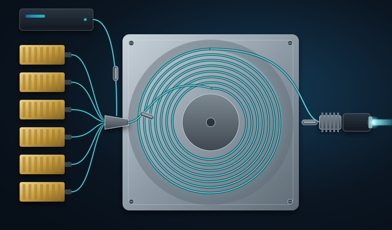
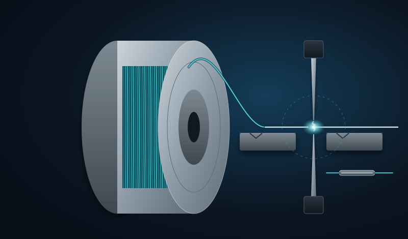
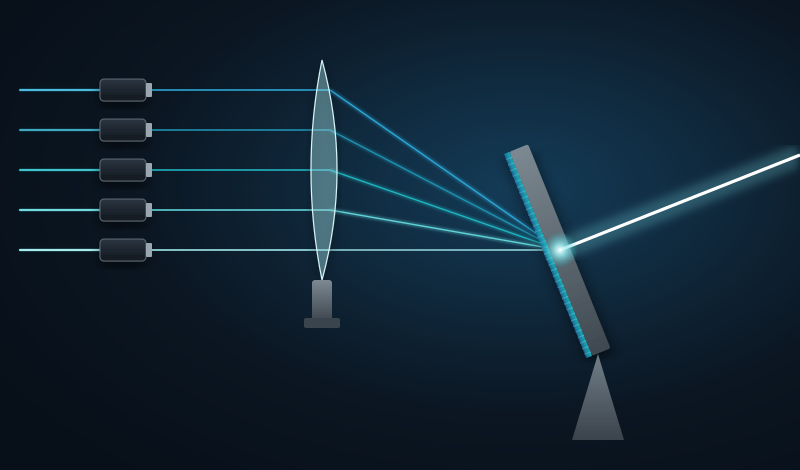
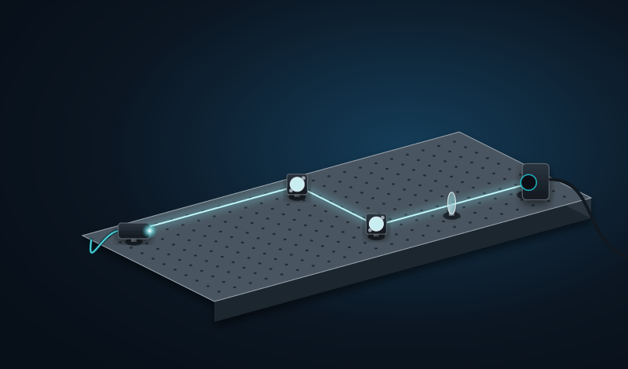
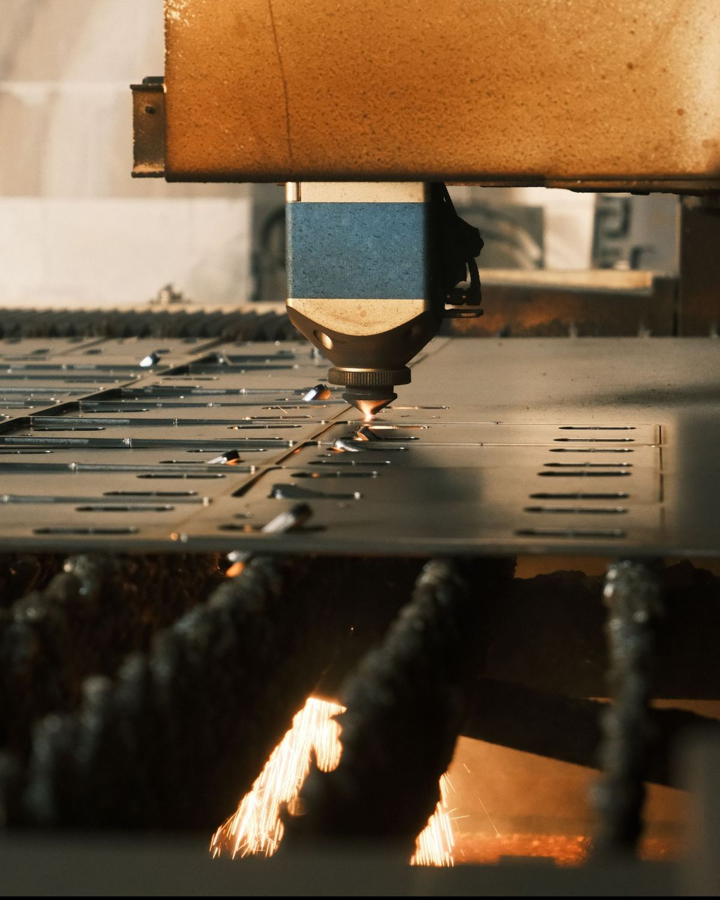
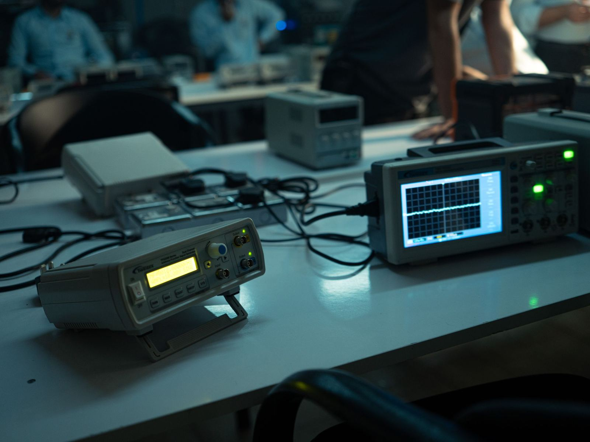
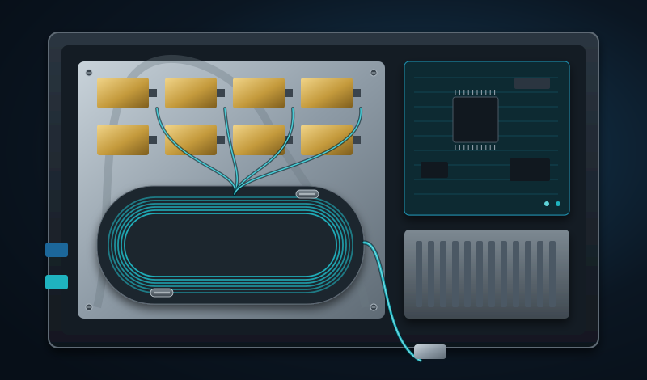

kW sınıfı single-mode fiber lazerler
Yüksek ışın kalitesi ve verimlilik için optimize edilmiş, endüstriyel ve araştırma uygulamalarına yönelik sürekli dalga fiber lazerler.
Laser generation genius
LaserG; kW sınıfı single-mode fiber lazerler, dar çizgi genişlikli seed kaynakları ve amplifikatörler ile ışın birleştirme teknolojilerini tasarlar, geliştirir ve üretir.
Teknolojiler

Yüksek ışın kalitesi ve verimlilik için optimize edilmiş, endüstriyel ve araştırma uygulamalarına yönelik sürekli dalga fiber lazerler.

Spektral saflık, polarizasyon kararlılığı ve düşük gürültü gerektiren sistemler için seed kaynakları ve fiber amplifikatörler; ışın birleştirme mimarilerinin temel yapı taşı.

Spektral ve koherent ışın birleştirme ile tek bir fiber lazerin sınırlarının ötesinde güç ölçeklendirme.

Optik tasarım, simülasyon, termal yönetim ve sistem entegrasyonunu kapsayan, ihtiyaca özel lazer çözümleri.

Uygulama alanları
Kesme, kaynak ve eklemeli imalat gibi yüksek parlaklık ve ışın kalitesi gerektiren süreçler için fiber lazer kaynakları.
Laboratuvarlar için kararlı, yapılandırılabilir dar çizgi genişlikli lazer kaynakları ve amplifikatörler.
Spektral ve koherent ışın birleştirmeye hazır, ölçeklenebilir amplifikatör modülleriyle sistem entegratörlerine yapı taşı.
Zorlu çevre koşullarına uygun, yüksek güvenilirlikli ve ölçeklenebilir yüksek güçlü fiber lazer kaynakları ve alt sistemleri.
İhtiyaca özel tasarım ve entegrasyon projeleri ile uzun vadeli servis ve bakım desteği.
Yaklaşımımız
Optik mimariden mekanik ve elektronik entegrasyona kadar tüm süreci kendi ekibimizle yürütüyor; her ürünü modelleme, test ve kalifikasyon adımlarıyla doğruluyoruz.


Neden LaserG
Spektral ve koherent ışın birleştirme sistemleri düşünülerek tasarlanan dar çizgi genişlikli kaynaklar ve amplifikatörler.
Modüler mimari sayesinde tek kanaldan çok kanallı yüksek güçlü sistemlere maliyet etkin ölçeklendirme.
SBS ve TMI gibi güç sınırlayıcı etkilere yönelik ileri kontrol teknikleriyle yüksek ışın kalitesi ve kararlılık.
Ulusal yetkinlikle tasarlanıp üretilen, küresel standartlarla rekabet eden çözümler.
Tasarımdan devreye almaya ve satış sonrası desteğe kadar hızlı özelleştirme ve yerel mühendislik desteği.
Vizyonumuz
Yüksek güçlü, dar çizgi genişlikli fiber lazer amplifikatörlerinde küresel ölçekte öncü olmak; daha güvenli, daha ileri ve sürdürülebilir bir gelecek için yeni nesil lazer sistemlerine güç vermek.
Misyonumuz
Geniş bir uygulama yelpazesindeki ileri lazer sistemlerine güç veren ölçeklenebilir, güvenilir ve yüksek verimli dar çizgi genişlikli lazer kaynakları sunmak.
Değerlerimiz
Her işimizde en yüksek kalite standartlarını karşılayan, doğru ve güvenilir lazer çözümleri.
Lazer ve optik teknolojisinin sınırlarını sürekli zorlayarak müşterilerimize öncü çözümler sunuyoruz.
Ar-Ge'den müşteri hizmetlerine kadar her adımda beklentilerin ötesine geçmeyi hedefliyoruz.
Müşteri ve paydaşlarımızla yakın çalışarak ihtiyaca özel çözümler geliştiriyoruz.
Enerji verimli çözümler ve çevreye duyarlı süreçlerle daha yeşil bir gelecek için çalışıyoruz.
Kurucu
Kurucu ve Teknik Direktör
Doç. Dr. Kalyoncu, elektro-optik ve lazer sistemleri alanında 15 yılı aşkın araştırma ve sistem geliştirme deneyimine sahiptir ve elektrik mühendisliği ve bilgisayar bilimleri alanında doktora derecelidir. Monolitik, yüksek parlaklıklı single-mode fiber lazer ve MOPA mimarilerinin modellenmesi, entegrasyonu ve multi-kW çıkış seviyelerine güç ölçeklendirmesinde uçtan uca tasarım deneyimi bulunmaktadır. Spektral ve koherent ışın birleştirme, dar çizgi genişlikli fiber amplifikatörler, faz kilitleme ve kontrol algoritmaları, nonlineer optik ve yüksek güçlü fiber bileşen üretimi başlıca uzmanlık alanlarıdır. Optik, mekanik, elektrik ve test mühendislerinden oluşan multidisipliner ekiplere liderlik etmiş; hakemli dergilerde ve uluslararası konferanslarda yayımlanmış çok sayıda bilimsel çalışması bulunmaktadır.
Optik, elektrik-elektronik, optomekanik ve gömülü yazılım mühendisleri ile fiber optik, elektronik ve mekanik montajda uzman teknisyenler.
İletişim
Ürünlerimiz, özel çözümler veya iş birliği fırsatları için bize ulaşın.